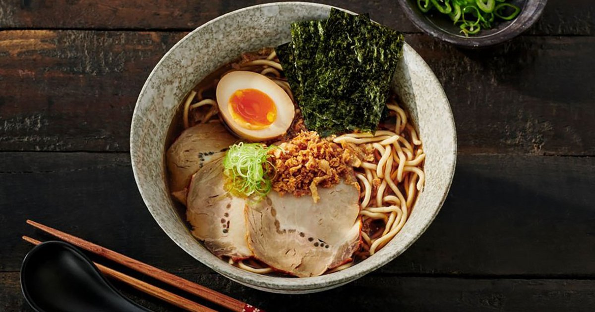

Ramen

Great Ramen
Ramen
is a japanese dish which its main pecularity are its noodles.
Ingredients
Noodles
Broth
Toppings
Seasonings
Steps
Prepare the broth
Cook the noodles
Prepare Toppings
Assemble the Ramen
Prepare